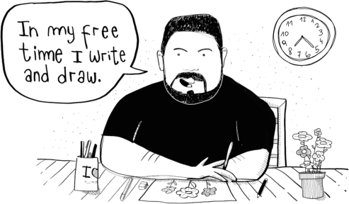
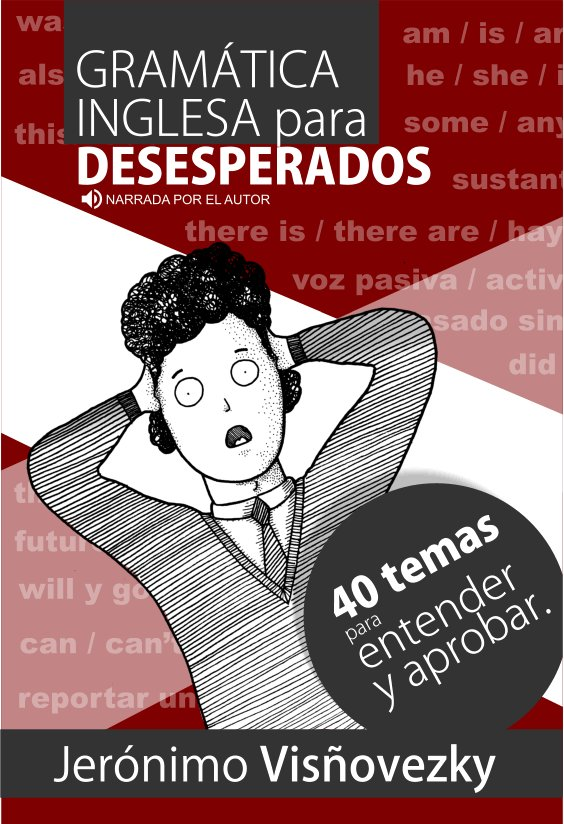
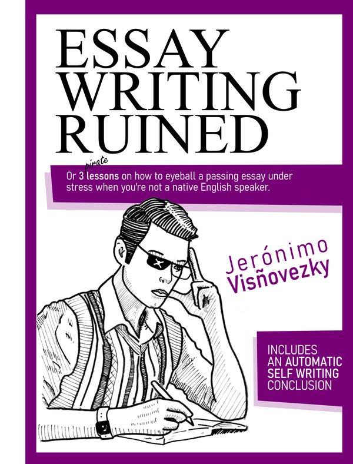
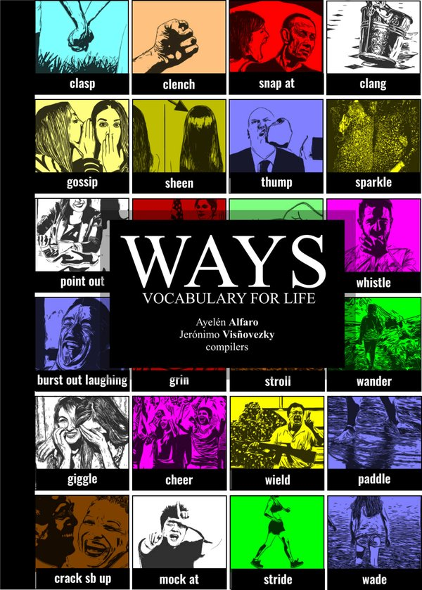
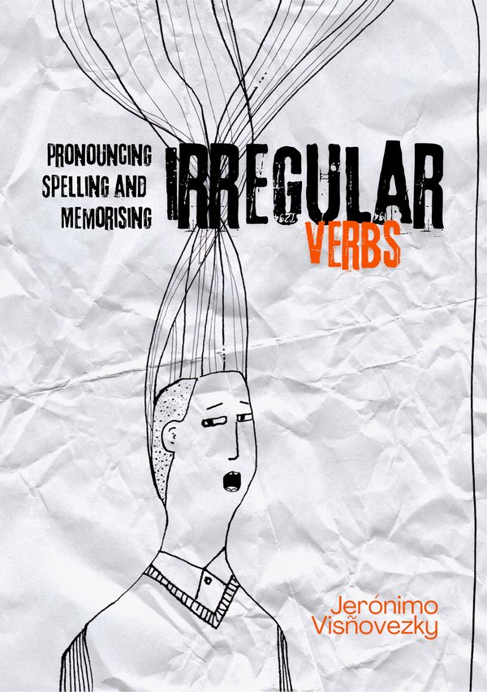
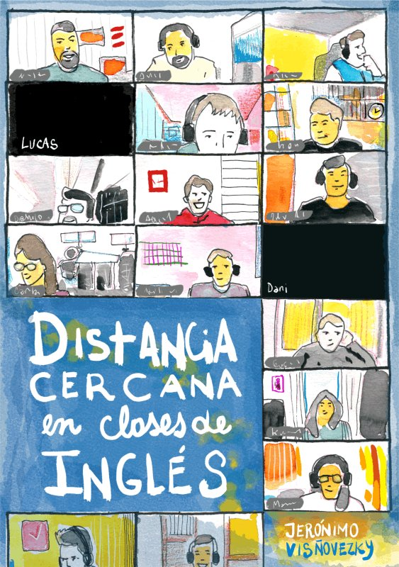

Jerónimo Visñovezky
Real English. Real fast. Zero boredom.
20+ years of experience and an actual English teaching degree. I have taught in institutes and secondary schools, and I moved to Zoom® full time in 2021 and never looked back.
1 hr online English classes with Zoom®

English mastery without the misery.
If you don't like the first class, you don't have to pay. It's free.
Feedback from my students
Jero is a fantastic teacher who balances professionalism with a fun, engaging atmosphere. His lessons are tailored to my interests, and his patience with difficult concepts makes a huge difference in my confidence.
I appreciate how conversational and dynamic the classes are. I never get bored and my fluency has improved a lot. Jero's passion for teaching is clear, and his pronunciation is excellent.
The flexibility and dedication are unmatched. He truly cares about his students' goals and goes the extra mile with extra materials. I look forward to every session.
These are AI-written summaries of real student feedback.
Read the original feedback.

Gramática inglesa para desesperados
A 240-page book that explains English grammar in Spanish, for students who struggle to pass exams. Free to download, and there is a podcast too.
Books and handouts

Essay writing ruined
A structuralist approach to passing essay writing tasks.

Ways: vocabulary for life
Advanced vocabulary separated into categories.

Irregular verbs
A list with audio and activities to help you learn irregular verbs.

Distancia cercana
Tools other teachers can use to improve their Zoom classes.
Teaching for more than 20 years
Córdoba, Santiago del Estero, now online
I wasn't always a teacher. I also worked in a call center, for a couple of architectural companies and in distance learning departments.
A project I'm building
LessonMark
Write an English lesson in a plain text file, and LessonMark turns it into an interactive class page. It's designed to be easy for a teacher to write by hand, and easy for an AI to generate.
- Timed clips from YouTube, mp3 or mp4
- Fill in the gaps
- True or false
- Multiple choice
- Long answers with suggested answers
- A hidden answer key at the end
Not sure? Hit me up.
jeronimov [at] gmail [dot] com
+54 9 3855309501